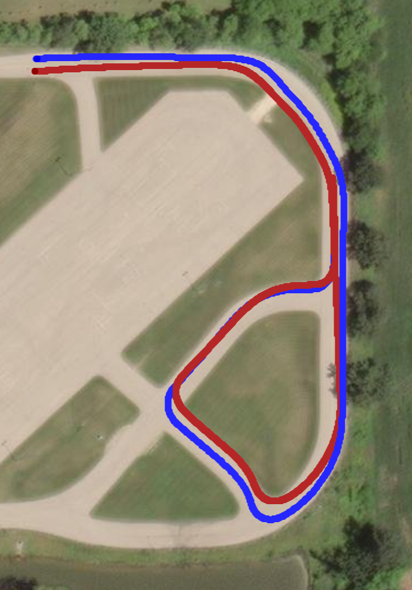
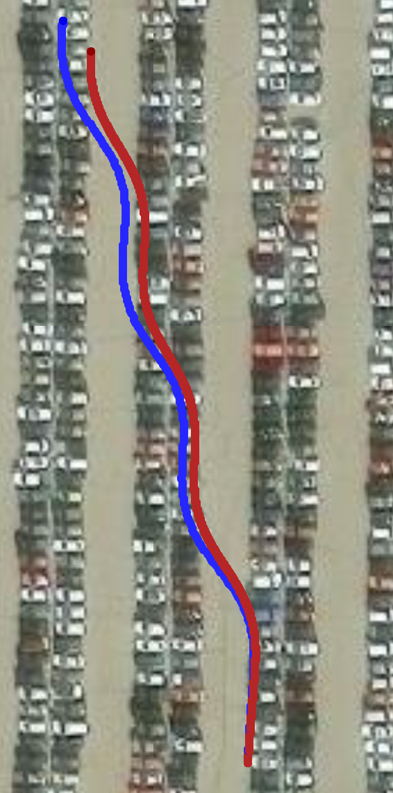

State estimation
Autonomous Vehicle Localization
Estimating vehicle motion when GPS is unavailable, with wheel odometry, inertial measurements, and an extended Kalman filter.
Explore project
Wisconsin Autonomous · SAE AutoDrive
Technologies: C++, ROS 2, CAN, IMU, extended Kalman filtering, and Foxglove Studio.
Motivation
Localization provides the vehicle-state estimate needed by our control stack. In SAE AutoDrive's localization challenge, GPS is intentionally made unavailable, and the vehicle must estimate its position while completing a course. This was my first project with Wisconsin Autonomous.
My contribution
I developed both the wheel-odometry and IMU localization nodes in C++/ROS 2. Working with my team lead, I also contributed to combining their estimates through an extended Kalman filter (EKF). Both nodes run on the vehicle. A separate GPS-reliability detection node, developed by another team member, supplies an input to the localization system.
How it works
The wheel-odometry node uses CAN-derived encoder and steering data with Ackermann geometry to estimate vehicle motion. The IMU node uses inertial measurements, and the EKF combines the two sources to support localization when GPS becomes unreliable. Sensor noise and variations in wheel-road interaction make this estimation challenging.
I used recorded ROS bags and Foxglove Studio to compare the estimated trajectories against GPS reference data and guide improvements. Across multiple ROS bags, the final-position error was approximately three meters. This measures the ending position, rather than an average error along the full route. The team placed third out of ten in the localization challenge.
Lessons learned
This project taught me how to collaborate within a mature codebase and learn unfamiliar tools while working with real hardware. Many questions depended on our particular sensors, interfaces, and vehicle setup, so progress required working with teammates and tracing the existing system rather than relying on a generic online answer.
Demo and results
Red shows the estimated trajectory and blue shows the GPS reference. The separation between the lines provides a visual comparison of the paths; these images do not represent a calculated point-by-point error metric.



